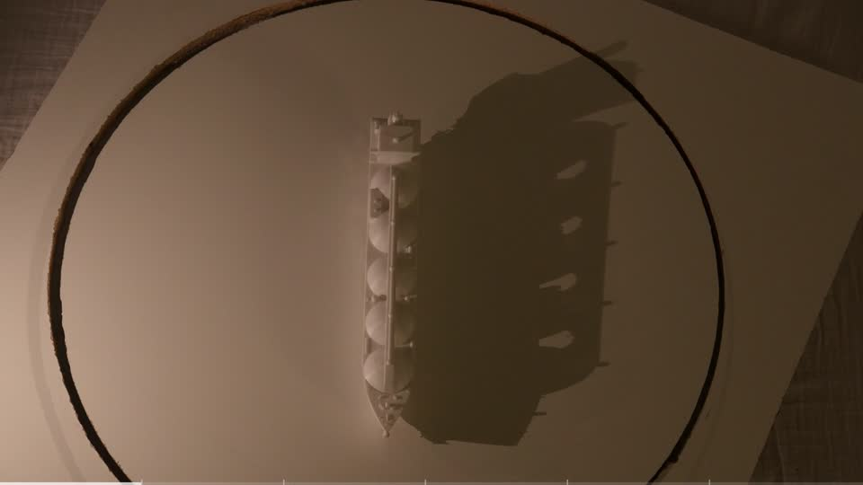
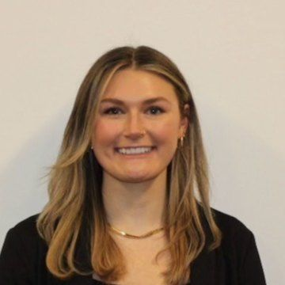
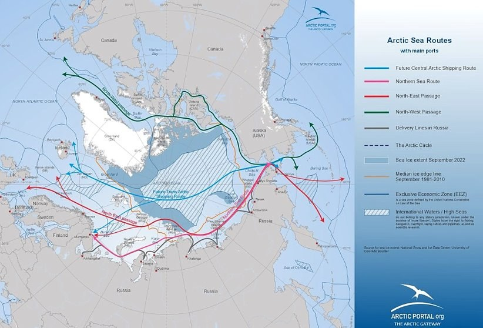
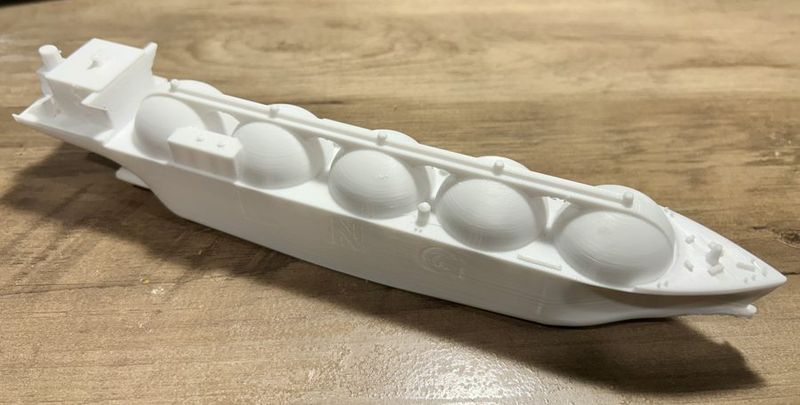
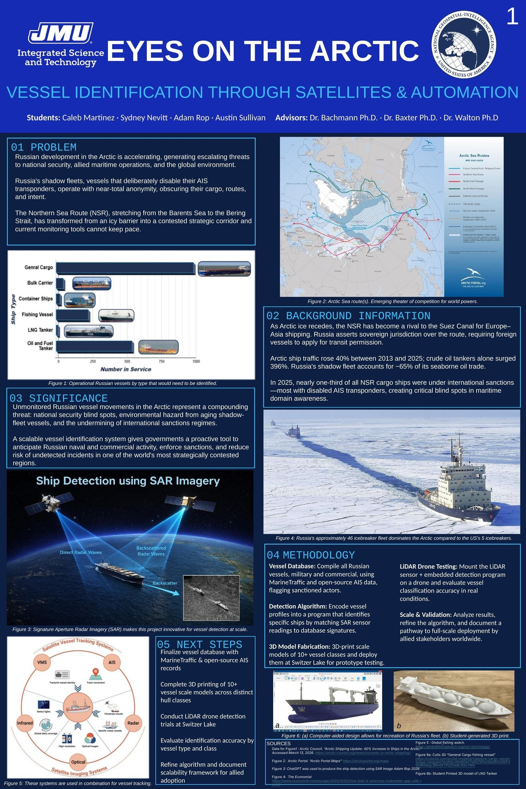

Training data capture
3D-printed vessels filmed under a fixed light at six camera angles to build a reproducible image set.
See the approach →B.S. Integrated Science and Technology · Geospatial Analysis for International Security · James Madison University · May 2027
Geospatial and intelligence analysis for national security. I'm drawn to problems where careful data shows what others miss.
ACTIVE SECRET CLEARANCE · U.S. citizen · Fredericksburg, VA


About
Integrated Science and Technology student at James Madison University, concentrating in Geospatial Analysis for International Security with a minor in Environmental Studies.
I've cataloged hazardous materials at Naval Surface Warfare Center Dahlgren, maintained project databases as an engineering aide in the defense sector, and am now part of an NGA-partnered capstone team that identifies Russian vessels operating dark in the Arctic.
Active Secret clearance · U.S. citizen
May 2027 expected graduation
Dean's List · Global Impact Award
Core tools: ArcGIS Pro · GEGD Pro · SAR and optical imagery · geospatial mapping · Excel · GitHub · SharePoint · SolidWorks · Fusion 360
Featured project · Capstone · NGA partnership
An open-source intelligence system that fuses satellite imagery with AIS data to identify Russian vessels in the Arctic, even after they switch off their transponders.

3D-printed vessels filmed under a fixed light at six camera angles to build a reproducible image set.
See the approach →
A 3D-printed LNG tanker, one of 10+ hull classes modeled for machine learning detection trials.
See what I built →
Our Eyes on the Arctic poster won at the JMU CISE Symposium, Apr 2026.
Read the LinkedIn post →Briefed the Dean of CISE and the College External Advisory Council, Sep 2026.
Read the LinkedIn post →ISAT 491 Capstone · In partnership with the NGA · Sponsored by USSOCOM
Vessel identification through satellites and automation
Working with the National Geospatial-Intelligence Agency, our four-person team is building an open-source intelligence system that can identify a ship even after it turns off its transponder. It fuses satellite imagery with AIS records, uses machine learning to detect vessels, and flags every place where what a ship reports about itself disagrees with what the imagery shows.
Status: In progress · Expected completion May 2027
Recognition: Global Impact Award, CISE Symposium (Apr 2026) · Read the LinkedIn post
Presented to the Dean of CISE and the College External Advisory Council (Sep 2026) · Read the LinkedIn post
SAR + optical imagery
AIS identity, position, course
ML finds ships in imagery
Pair detections with AIS records
Switzer Lake drone trials
The growing threat
Russia's shadow fleet is moving through the Arctic with its transponders switched off, and today's monitoring tools can't keep up.
Traffic on the Northern Sea Route is rising quickly, and a growing share of it is shadow-fleet tankers moving sanctioned oil with AIS off or gaps in their broadcasts. AIS fails exactly where the risk is growing fastest, and the U.S. has little physical presence to fill the gap.
Full Northern Sea Route transits in 2025, on pace for about 150 in 2026
Of Russia's seaborne crude exports carried on shadow fleet tankers
Sanctioned vessels on the route in 2025 versus 2024
Russian icebreakers versus U.S. polar icebreakers, so persistent monitoring has to come from orbit
Satellite imagery shows what is physically on the water; AIS shows what ships say about themselves. The intelligence lives in the disagreements between them: a hull with no signal, a signal with no hull, or a broadcast identity that doesn't match the ship in the image.
My contributions
Wrote code for the project's imagery processing and vessel detection work.
Gathered synthetic aperture radar and optical satellite imagery of vessels for detection and matching.
Recorded a 3D-printed tanker model under a fixed light source at six camera elevations, 20° to 45°, to build a reproducible image set: 1,728 labeled views per model across 10+ vessel classes.
Students: Caleb Martinez, Sydney Nevitt, Adam Rop, Austin Sullivan
Faculty advisors: Dr. Chris Bachmann, Dr. Philip Baxter, Dr. Tim Walton
Partner and sponsor: National Geospatial-Intelligence Agency (NGA), U.S. Special Operations Command (USSOCOM)
Resume
A results-driven learner focused on continuous improvement. I use research skills to gather and analyze data for informed decisions, adapt quickly to new challenges, and contribute to team efforts with critical and holistic thinking. U.S. citizen holding an active Secret security clearance.
snevitt2015@gmail.com · LinkedIn · Fredericksburg, VA
Certifications
HAZWOPER, OPSEC, Insider Threat, Laser Safety, CPR, and the Global Impact Award.
Award
CISE Symposium, JMU · Apr 2026 · For the Eyes on the Arctic poster · Read the LinkedIn post
Safety
Hazardous Waste Operations and Emergency Response · OSHA
Security
For military members, DoD employees and contractors
Security
Department of Defense
Safety
Laboratory safety
Safety
Cardiopulmonary resuscitation · First aid